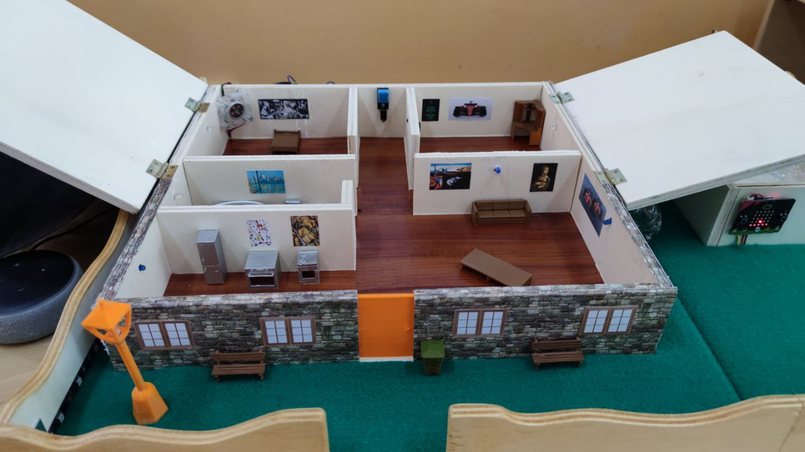
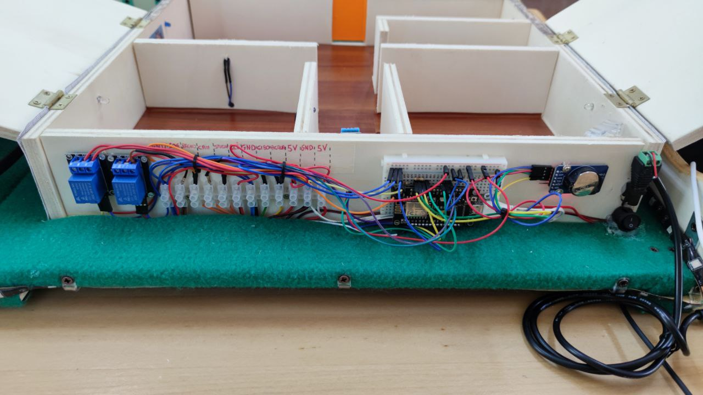
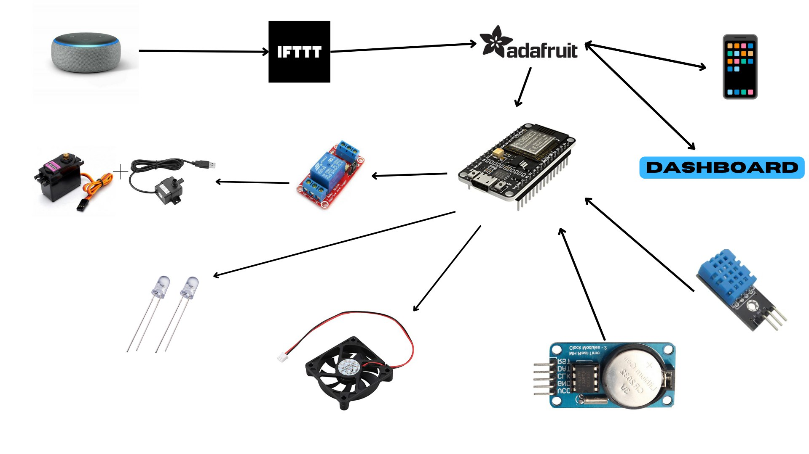
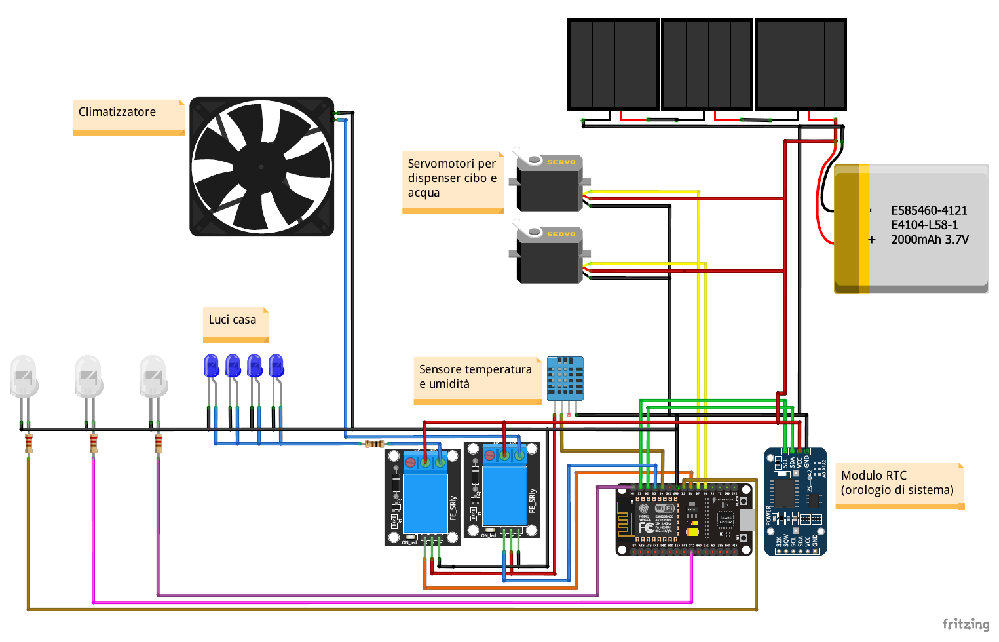
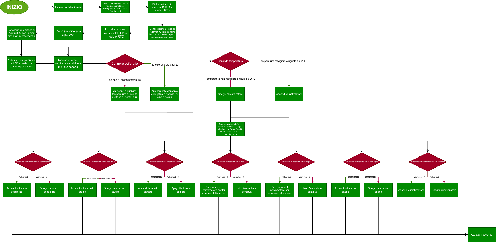

Vincitore · Olimpiadi nazionali di Problem Solving 2022
Smart Domotic System
Modello di casa domotica controllabile con Alexa, abbinato a una cuccia intelligente per cani. Il progetto mi è valso la vittoria nazionale delle olimpiadi di problem solving nel ramo makers.

Il progetto
Smart Domotic System (SDS) è un modello in scala di casa domotica, abbinato a una cuccia intelligente per cani. Il sistema si controlla con la voce tramite Alexa, da smartphone e da una dashboard web, e gestisce luci, climatizzazione e distribuzione di cibo e acqua per l’animale. Realizzato all’IIS “F. Severi” di Gioia Tauro, ha vinto le Olimpiadi nazionali di Problem Solving 2022 nel ramo makers, tra un buon numero di squadre.
Il mio contributo
Eravamo una squadra di quattro studenti. Mi sono occupato soprattutto dell’hardware e della costruzione fisica del modello in legno, oltre a una parte del codice e della coordinamento del team in tutte le sue parti.
Come funziona
I comandi vocali arrivano da Alexa (Echo Dot) a IFTTT, che li inoltra ai feed di Adafruit IO. La scheda NodeMCU controlla i feed ogni 5 secondi e di conseguenza accende o spegne le luci di soggiorno, studio, camera e bagno e il climatizzatore. Gli stessi feed si possono modificare anche da smartphone e dalla dashboard.
In automatico, il sensore DHT11 misura temperatura e umidità e le pubblica su Adafruit IO. Quando la temperatura raggiunge o supera i 26 °C il climatizzatore (una ventola nel modello) si accende, altrimenti resta spento. Il modulo RTC tiene l’orario di sistema: all’ora prestabilita i servomotori azionano i dispenser di cibo e acqua della cuccia, che si possono attivare anche a comando.
La cuccia smart
Due micro:bit comunicano via radio: una è fissata al collare del cane, l’altra è montata nella cuccia. Quando il segnale radio raggiunge una certa intensità, cioè quando il cane è vicino, la porta della cuccia si apre e resta aperta finché il cane è dentro. Cibo e acqua vengono distribuiti a orari prestabiliti.
Componenti
- Scheda NodeMCU (ESP8266) con Wi-Fi
- Modulo RTC (orologio di sistema)
- Sensore di temperatura e umidità DHT11
- 2 moduli relè
- 2 servomotori per i dispenser di cibo e acqua, pompa USB per l’acqua
- LED per le luci della casa e ventola come climatizzatore
- Alexa Echo Dot, IFTTT, Adafruit IO
- 2 micro:bit con collegamento radio (collare e cuccia)
- Pannello solare pieghevole e batteria LiPo 3,7 V 2000 mAh, dimensionati sulla carta per alimentare il modello (le dimostrazioni sono state fatte con alimentazione da rete)
- Firmware in C++, secondo il diagramma di flusso in documentazione
Documentazione




